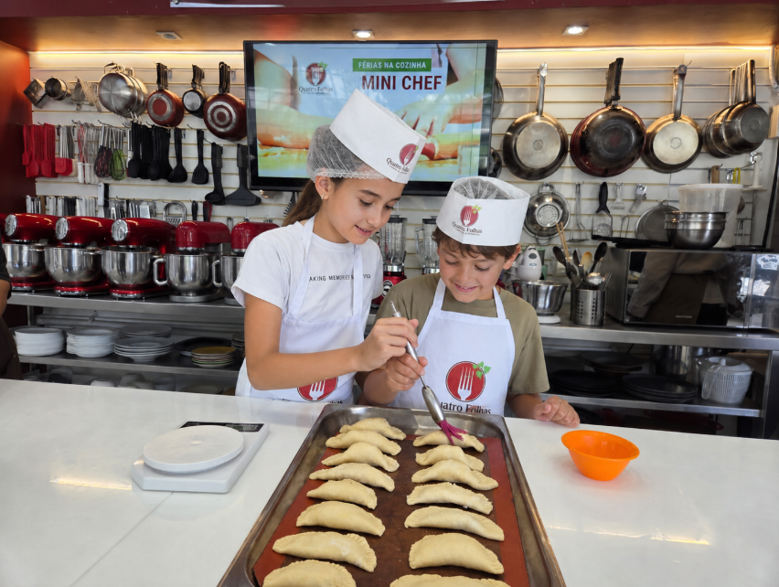
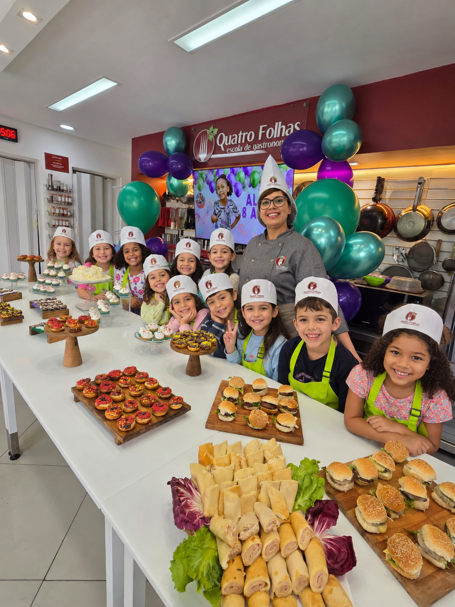
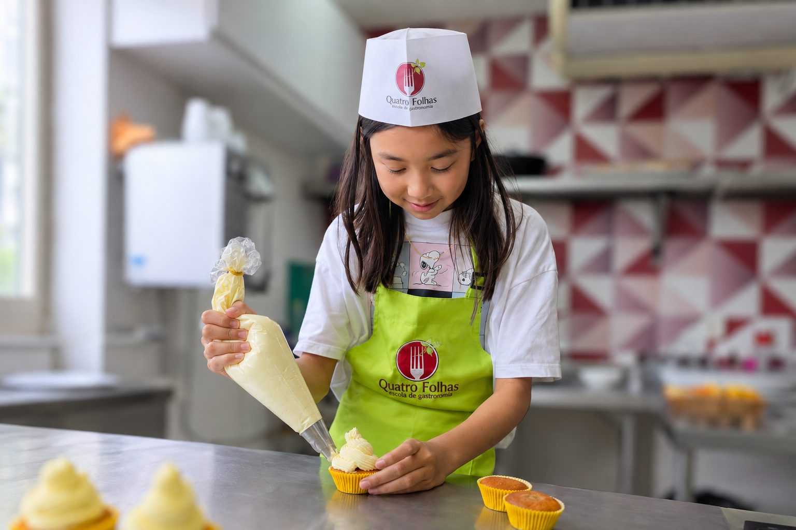
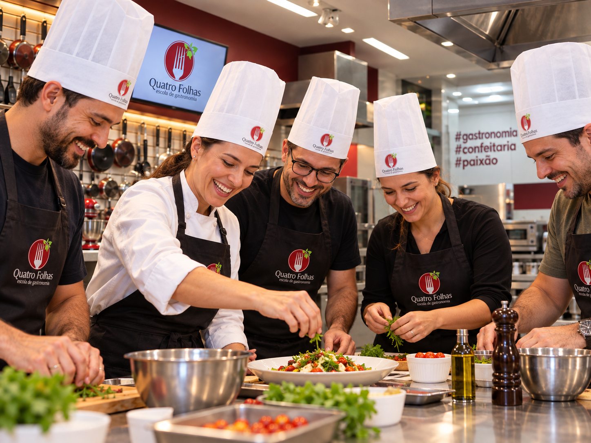
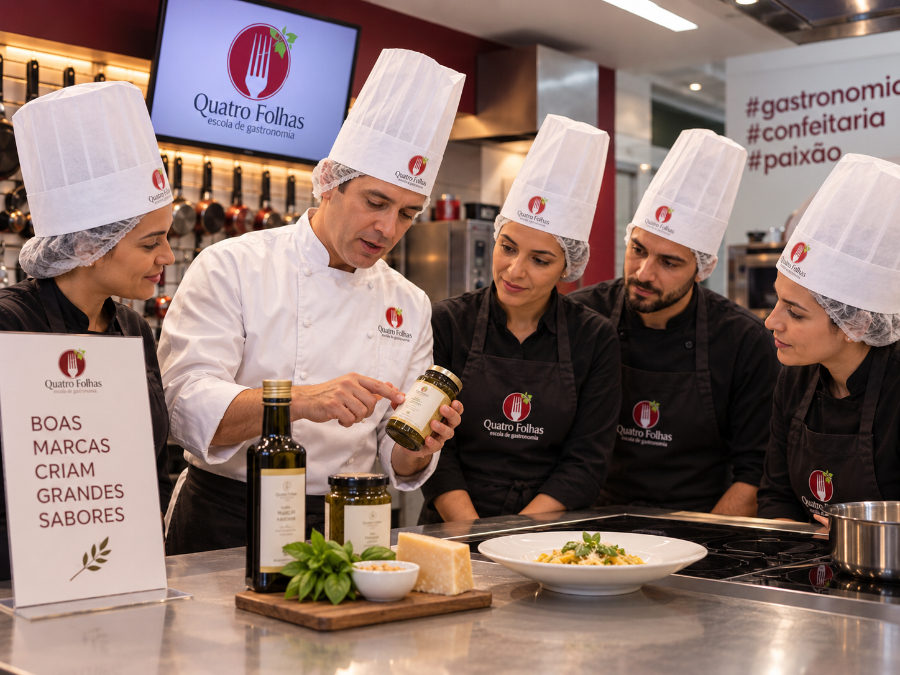
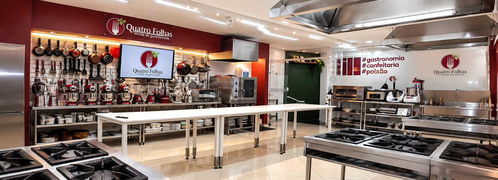

Gastronomia · Confeitaria · Paixão
Aprenda na prática a cozinhar como um chef.
Cursos e experiências para começar, evoluir ou transformar a gastronomia em profissão.
Cozinha escola · desde 2015
Aprenda fazendo
Aprenda na prática a cozinhar como um chef.
Formação profissional, cursos rápidos e encontros gastronômicos em uma cozinha feita para aprender na prática.
Escolha seu próximo passoAlunos formados
Histórias que começaram dentro da nossa cozinha.
Anos de mercado
Experiência dedicada à formação gastronômica.
Professores pós-graduados
Profissionais atuantes e próximos dos alunos.
Escolha seu caminho
O que você quer viver na Quatro Folhas?
Quero me profissionalizar
Cursos práticos para atuar, empreender ou se aprofundar em gastronomia e confeitaria.
Cursos profissionalizantes 02Quero uma aula gastronômica
Aulas temáticas para aprender receitas, descobrir sabores e viver uma experiência diferente.
03Quero uma experiência infantil
Mini Chef, festas infantis gastronômicas e projetos educativos para escolas particulares.
04Sou empresa ou marca
Team building, parcerias, ativações, Locação de cozinha, gravações e workshops.
Diferenciais
Formação técnica com estrutura profissional e visão de futuro
Professores pós-graduados, cozinha altamente equipada, turmas de até 16 alunos, portal do aluno, app e vivência internacional ampliam a jornada de formação.
Professores pós-graduados
Docentes com formação acadêmica e vasta experiência no mercado de trabalho.
Cozinha altamente equipada
Ambiente profissional para aprender técnica, rotina de bancada e prática com mais segurança.
Apenas 16 alunos por turma
Mais proximidade, acompanhamento e espaço para evoluir durante as aulas.
Práticas em todas as aulas
vivência mão na massa para desenvolver técnica, segurança e rotina profissional desde o início.
Intercâmbio gastronômico
vivência internacional em Buenos Aires para ampliar repertório, cultura e visão de mercado.
App e portal do aluno
Materiais, comunicados, pagamentos e certificados organizados para apoiar a jornada.
Mídia e gravações
Uma escola reconhecida também pelo que acontece dentro dela
A cozinha da Quatro Folhas já recebeu TV, streaming, realities, marcas e produções gastronômicas que reforçam a força do espaço.
Batalha dos Confeiteiros
Um marco de reconhecimento especialmente forte para quem busca confeitaria profissional.
Ver históricoRealities e conteúdos digitais
A escola já recebeu produções que conectam gastronomia, entretenimento e marcas.
Conhecer produçõesCozinha pronta para gravar
Estrutura profissional para campanhas, realities, conteúdos, fotos e experiências.
Ver locaçãoCursos e experiências
Escolha o caminho que combina com o seu momento
Formação profissional, cursos rápidos, aulas temáticas, experiências para crianças e uma forma especial de presentear.
Quero meprofissionalizar
Formações completas para desenvolver técnica, confiança e novas possibilidades profissionais.
Conhecer formaçõesQuero aprender em menos tempo
Cursos diretos para ampliar repertório e aprender novas técnicas.
Ver cursos rápidos Aula temáticaQuero viver uma experiência em um dia
Uma aula prática, com data marcada e um tema gastronômico específico.
Ver próximas aulas Mini ChefQuero uma experiência para crianças
Gastronomia, criatividade e diversão para aprender cozinhando.
Conhecer Mini Chef Cartão presenteQuero presentear alguém
Um presente diferente para quem ama gastronomia e novas experiências.
Escolher cartão presenteAlunos Empreendedores
Alunos que empreendem também fazem parte da nossa mesa.
Uma vitrine viva para apresentar marcas, encomendas e projetos criados por alunos Quatro Folhas, sem intermediação comercial da escola.
Ver alunos em destaqueCalculadoras gastronômicas
Planeje antes de produzir.
Ferramentas rápidas para estimar medidas, formas, massas e porções antes de ir para a bancada.
Os cálculos ficam reunidos em uma página própria, para consultar com calma sem poluir a página inicial.
Aulas temáticas
Escolha sua próxima experiência
Aulas práticas para aprender novos preparos, viver bons momentos e aproveitar a gastronomia sem precisar ser profissional.
Carregando aulas temáticas cadastradas...
Crianças e Escolas
Experiências que ensinam, aproximam e ficam na memória
Atividades gastronômicas que despertam autonomia, criatividade e confiança, em um ambiente seguro e acolhedor.

Mini Chef
Crianças colocam a mão na massa e descobrem o prazer de cozinhar de forma prática, divertida e cheia de significado.

Festa Infantil gastronômica
Uma comemoração saborosa e criativa, com atividades culinárias que encantam crianças e adultos.
Conhecer festa
Aulas para Escolas Particulares
Projetos personalizados que levam a gastronomia para o dia a dia escolar, de forma educativa e inspiradora.
Montar projetoEmpresas e Marcas
Experiências gastronômicas para equipes, marcas e projetos especiais
A Quatro Folhas recebe empresas e parceiros para ações que unem cozinha, relacionamento, conteúdo e experiência.

Team Building
Dinâmicas gastronômicas para aproximar equipes e criar momentos de colaboração.
Ver formato
Parcerias com Marcas
Aulas, ativações, eventos e conteúdos que conectam marcas ao universo da gastronomia.
Ver parcerias
Locação da Cozinha
Espaço equipado para gravações, workshops, fotos, eventos e produções gastronômicas.
Ver locação
Carreira
Seu próximo passo na gastronomia
Conectamos alunos e ex-alunos a oportunidades no mercado gastronômico e ajudamos empresas a encontrar profissionais preparados.
Banco de oportunidades
A Escola
Uma cozinha escola para formar, receber e inspirar
Desde 2015, a Quatro Folhas forma pessoas por meio da gastronomia com prática, técnica e acolhimento.
- Cozinha equipada
- Aulas práticas
- Professores experientes
- experiências para alunos, crianças, escolas e empresas
Vida na Quatro Folhas
Estrutura real, aulas acontecendo e uma escola com presença
A unidade mostra a força da marca: cozinha equipada, alunos uniformizados, equipe em aula e ambientes preparados para receber.


Contato
Encontre sua próxima experiência gastronômica
Fale com a Quatro Folhas para estudar, celebrar, reunir sua equipe, criar uma parceria ou acessar materiais de aluno.